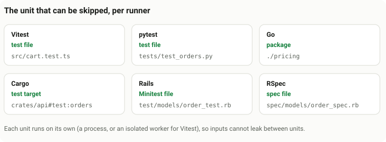

Test runners
vci works with six test runners: Vitest, pytest, Go, Cargo, Rails (Minitest) and RSpec. This page shows, for each one, how to set it up, what vci records, what it refuses, and what to pin so a test passed on your laptop is skipped on a Linux CI runner.
Each runner has an adapter: the part of vci that runs your tests and records what they read. The adapter decides what a unit is: the smallest piece of your suite that vci can skip. The diagram shows the unit for each runner.

What every adapter shares. Each unit runs in its own process, so nothing leaks in from another unit. While it runs, a collector (code vci loads into the test process) records every file, package and environment variable the test actually used. (Rust has no such hook, so the cargo adapter uses a conservative rule instead: see the table below.) When the unit passes, vci signs an attestation: a record that says "this unit passed with exactly these inputs". If the collector cannot see something the test did, or an input lies outside the repository, vci refuses to attest. The unit then simply runs in CI, as it would without vci.
| Adapter | Unit | How inputs are found |
|---|---|---|
vitest | test file | observed at run time (module graph, file reads, env reads) |
pytest | test file | observed at run time (Python audit hooks, import system) |
go | package | observed at run time (a logger overlaid into the standard library) plus go list |
cargo | test target | conservative: every file of the package and its in-repo dependencies |
rails | Minitest file, or RSpec spec file | observed at run time (a collector wrapping Ruby's file, env and process entry points) |
The rules for every adapter.
- A unit is attested only when it passed, nothing it did was invisible to the collector, and every input is inside the repository.
- A unit with a skipped test is not attested. Rust's
#[ignore]is the exception. - An attestation vouches for the unit run on its own, in its own process.
The commands in every set-up block are the same five steps:
| Command | What it does |
|---|---|
vci init | writes vci.toml (settings), .vci/allowed_signers (your public key) and, when the repository has an origin remote, .git-meta (where attestations are published) |
git commit | commits them. CI reads keys and policy from the base branch (the branch a pull request merges into), so merge this commit to main first. |
vci run | runs tests, records inputs, signs an attestation for each unit that passed |
vci plan | lists which units would be skipped (SKIP) and which would run (RUN) |
vci push | publishes the attestations to refs/meta/main |
Copy-and-paste setups for each runner, with real output, are on the Examples page.
Vitest
Needs Node 22.15+ and Vitest >=3.2 <6. The unit is a test file.
Set up
cd your-project
# or set VCI_JS_PLUGIN instead
npm install --save-dev /path/to/vci/js/vitest-plugin
vci init --key ~/.ssh/id_ed25519.pub --no-install
git add vci.toml .vci/allowed_signers .git-meta \
&& git commit -m "Enable vci"
vci run src/b.test.ts --key ~/.ssh/id_ed25519
vci plan --base-ref origin/main
vci pushWhat is recorded
- every module in the Vite graph and every module the worker evaluated, including computed
import(); - every file or directory read or stat'ed, and every failed lookup, so creating a file that was probed as absent invalidates the attestation;
- external packages as
name@version; - env vars: declared patterns,
VITE_*, and anything the test read.
Inputs of every test file
Besides what the test used, every test file also records these global inputs: package.json, lockfiles, .npmrc, the Vitest config, the tsconfig.json chain, vci.toml and the test's snapshot file.
What is refused
- Work the collector cannot see: child processes, network,
worker_threads,fetch. - Reading the whole environment: enumerating
process.env. - Writing: snapshot writes.
- Vitest modes:
isolate: false, vm or browser pools, and typecheck mode.
Laptop to Linux runner
- Pin the Node major version and
package-lock.json. - The Vitest and Vite versions must match on both sides.
pytest
Needs uv and pytest 9. The project must be a uv project with a committed uv.lock and a pytest config file in the project directory. The unit is a test file, run in its own process.
Set up
cd your-project
# a uv-managed build that also exists for the CI platform
uv python install 3.14.4
# pin the full version
echo 3.14.4 > .python-version
# never pick up the system Python
export UV_PYTHON_PREFERENCE=only-managed
uv lock
vci init --adapter pytest --key ~/.ssh/id_ed25519.pub
git add vci.toml .vci/allowed_signers .git-meta uv.lock \
.python-version && git commit -m "Enable vci"
vci run tests/test_b.py --key ~/.ssh/id_ed25519
vci plan --base-ref origin/main
vci pushWhat is recorded
- every module imported from the repository, including
conftest.pyfiles, and every path an import could have resolved to (so a new module that would shadow one is noticed); - every file opened or stat'ed, failed lookups and directory listings;
- installed distributions as
name@version, checked againstuv.lock; - env vars read through
os.environ, and alwaysPYTEST_*,PYTHON*andTZ.
Any change to uv.lock runs everything.
What is refused
- Work the collector cannot see:
subprocessand friends, sockets and HTTP clients,ctypes.dlopen, and SQLite databases inside the repository. - Runs that are not repeatable: xdist, reruns, and unseeded random ordering.
- Writing inside the repository.
- Reading the whole environment (
dict(os.environ)).
Laptop to Linux runner
- Use a uv-managed Python whose exact patch version uv also ships for Linux (check with
uv python list --all-platforms). Homebrew's Python will not match. - Pin the same uv version locally and in
astral-sh/setup-uv. - The full set of installed distributions must be equal. A dependency with a platform marker installs on one side only, so everything runs.
- The SQLite and OpenSSL versions the interpreter bundles are compared too. To accept other builds of them, set
libraries = "any"under[policy](see macOS to Linux). The Python version and the distributions are still compared. - Delete
.DS_Storeand__pycache__from directories your tests list.vci runwarns about them.
Go
 Go
GoNeeds a Go module and Go 1.26. The unit is a package: every directory with _test.go files. Test ids are package directories relative to the repository root.
Set up
cd your-module
vci init --adapter go --key ~/.ssh/id_ed25519.pub
git add vci.toml .vci/allowed_signers .git-meta \
&& git commit -m "Enable vci"
# default: every package with tests
vci run ./b --key ~/.ssh/id_ed25519
vci plan --base-ref origin/main
vci pushWhat is recorded
- Compile-time inputs, from
go list: every file of each in-repo package in the import closure, its directory listing,go:embedtargets, and files excluded by build constraints. - Run-time inputs, from a logger overlaid into the standard library for this build only: every file opened or stat'ed, every failed lookup, every env var looked up. This includes package initialisation and
TestMain. - External modules as
path@version, verified againstgo.sum.
What is refused
- starting a child process;
- package
netanywhere in the import closure (see the waiver below); - cgo and
syscallin non-standard packages; os.Environ;- a skipped test;
- using the local time zone with
TZunset.
Network waiver. Many test helpers import net/http without using it (testify's assert does). Set go_allow_net = true under [policy] to state that these tests do no network I/O. The waiver is recorded in the attestation and only accepted while the base commit's policy still sets it.
Laptop to Linux runner
- Pin the exact Go version in
actions/setup-go. - Declare
CGO_ENABLEDandTZin[env] global, and setCGO_ENABLED=0andTZ=UTCon both sides. - A package with platform-specific files (
b_linux.go,//go:build darwin) or code that refers toruntime.GOOSis only accepted on the same OS and architecture. - A package with floating-point code is only accepted on the same architecture.
Rust (Cargo)
Needs a Cargo workspace or package with a committed Cargo.lock. The unit is a cargo test target of a workspace member.
Set up
A unit's test id is its package directory, #, and the target:
| Test id | What cargo test runs |
|---|---|
<package dir>#lib | the library's unit tests |
<package dir>#doc | the library's doctests |
<package dir>#bin:<name> | a binary's unit tests |
<package dir>#test:<name> | an integration test file tests/<name>.rs |
cd your-workspace
vci init --adapter cargo --key ~/.ssh/id_ed25519.pub
git add vci.toml .vci/allowed_signers .git-meta Cargo.lock \
&& git commit -m "Enable vci"
# one unit
vci run 'crates/b#test:b' --key ~/.ssh/id_ed25519
# every unit of that package
vci run crates/b --key ~/.ssh/id_ed25519
vci plan --base-ref origin/main
vci pushWhat is recorded
A weaker guarantee than the other adapters. Rust has no hook for what a test reads at run time. Instead, every file in the package directory of the unit, and of every in-repo crate it builds, is an input.
A test that reads files elsewhere in the repository must declare them in vci.toml:
[[inputs]]
match = ["crates/b#test:*"]
extra = ["testdata/**", "shared/config.json"]vci scans the source for undeclared paths and refuses the unit when it finds one, but a path built at run time is not seen.
What is refused
Decided by scanning the source text, not by watching the test run:
- child processes (
Command::new); - sockets and network crates;
- FFI and
libc; env::vars();- a unit where no test ran;
- env mode
"loose". The cargo adapter only attests in strict mode ([env] mode = "strict": variables you have not declared are removed from the test's environment).
Laptop to Linux runner
rustcandcargomust be identical, including the LLVM version. Use rustup withrust-toolchain.tomlon both sides. Homebrew's rustc can report a different LLVM and then never matches.- Every target-dependent
cfgin the unit's code must evaluate the same on both platforms.cfg(unix)is fine between macOS and Linux;cfg(target_os = "linux")makes the unit run. - Code using
std::env::consts::OSor platform math functions pins the unit to the attesting OS and architecture.
Rails
Needs Rails 8 and the project's Ruby with its bundle installed (tested with Ruby 3.4.9 and SQLite). The unit is a test file, run in its own process. Two runners are supported:
runner | Unit, and how vci runs it |
|---|---|
"minitest" | a file bin/rails test runs by default;run as bin/rails test <file> |
"rspec" | a spec file RSpec's own configuration lists; run as rspec --options .rspec <file> |
Set runner in vci.toml, or leave it out and vci detects it from the lockfile and the directories present. This section covers Minitest and everything the two share; RSpec has its own section below.
Set up
cd your-app
# so the CI runner can install the same bundle
bundle lock --add-platform x86_64-linux
vci init --adapter rails --key ~/.ssh/id_ed25519.pub
git add vci.toml .vci/allowed_signers .git-meta Gemfile.lock \
&& git commit -m "Enable vci"
TZ=UTC vci run test/models/b_test.rb --key ~/.ssh/id_ed25519
TZ=UTC vci plan --base-ref origin/main
vci pushThe collector is plain Ruby loaded through RUBYOPT; nothing is installed into your project. It makes every run start from the same state:
- a fresh database: each SQLite database of the test environment is redirected to a new temp file with the schema loaded.
db/test.sqlite3is never used; - one process:
PARALLEL_WORKERS=1, no Spring, no Bootsnap caches; - a fixed Minitest seed (
--seed 0).
What is recorded
- every Ruby file loaded, and Zeitwerk's directory listings;
- every file read or checked: fixtures, templates, config, the schema;
- the gems used, by version;
- native libraries opened through FFI, such as Active Storage's libvips, by file name and hash;
- every variable read through
ENV.
Any change to Gemfile.lock runs everything.
What is refused
- child processes and forks;
- sockets;
- a database server (unless waived, see below);
- writes inside the repository outside
log/,tmp/,storage/andcoverage/; - enumerating
ENV; - any failure, error or skip, and a test that made no assertion.
Database servers. PostgreSQL and MySQL test databases are refused by default. rails_allow_db = true under [policy] waives that: vci then purges each database and loads the schema before every file. With the waiver you state that the test database holds nothing but what vci loads.
Laptop to Linux runner
A generated Rails app needs a few changes before anything is skipped across machines:
- Credentials. Active Record reads
config/master.keyat boot. That file is git-ignored, so CI never matches. Give the test environment its own committed credentials (bin/rails credentials:edit --environment test), remove the credentials, or declareRAILS_MASTER_KEY. CI. Change the generator'sconfig.eager_load = ENV["CI"].present?toconfig.eager_load = falseinconfig/environments/test.rb.- Time zone data. Use
gem "tzinfo-data"for every platform, and declare and setTZ=UTC. - Lockfile platforms.
Gemfile.lockmust list botharm64-darwinandx86_64-linux. - Ruby and
vendor/. Pin the exact Ruby in.ruby-version, and keepvendor/.keepcommitted. - Locale. Attest with a UTF-8 locale (
LANG=en_US.UTF-8). Ruby's default encoding is compared, and runners use UTF-8. - libvips and library versions. Homebrew's libvips is a different file from the runner's, so every file that loaded it runs, and so does every file when the SQLite, libyaml or time zone data versions differ. Set
libraries = "any"under[policy]to match libvips by name and ignore those versions, and install libvips on the runner. See macOS to Linux.
RSpec
RSpec runs through the Rails adapter, so everything in the Rails section applies: the fresh database, the single process, what is recorded, and the changes needed for a Linux runner. Tested with rspec-core 3.13 and rspec-rails 8. Plain Ruby projects that use RSpec without Rails work the same way.
Set up
cd your-app
bundle lock --add-platform x86_64-linux
vci init --adapter rails --key ~/.ssh/id_ed25519.pub
git add vci.toml .vci/allowed_signers .git-meta Gemfile.lock \
.rspec && git commit -m "Enable vci"
TZ=UTC vci run spec/models/order_spec.rb \
--key ~/.ssh/id_ed25519
TZ=UTC vci plan --base-ref origin/main
vci push# vci.toml
project = "."
adapter = "rails"
runner = "rspec"Option files
RSpec reads options from several places, some outside the repository. vci makes local and CI runs behave the same:
| Source | Treatment |
|---|---|
.rspec | read, and an input of every spec file: editing it runs everything |
~/.rspec, $XDG_CONFIG_HOME/rspec/options | never read |
.rspec-local | never read (it is usually git-ignored, so CI could not match it) |
SPEC_OPTS | hashed when set; strict mode removes it unless declared in [env] |
What is recorded
On top of the Rails list:
spec_helper.rb,rails_helper.rband every file they load;- the listing of directories loaded by a glob, such as
spec/supportand FactoryBot'sspec/factories, so a new support or factory file invalidates the specs that load them; - shared examples, custom matchers, fixtures and
file_fixturefiles; - the versions of rspec-core, rspec-rails, rspec-expectations and rspec-mocks.
Tip: a spec that only requires spec_helper has far fewer inputs than one that loads rails_helper, and survives most changes to the app.
What is refused
- a pending or skipped example:
pending,skip,xit,xdescribe; - a run where a filter left examples out:
:focus,fit, tag filters,--only-failures,--example; - errors outside examples, such as a load error or a failing
before(:suite)hook; - a process that exits non-zero after RSpec finished, for example SimpleCov's minimum coverage;
- retries that hide a failed first attempt (rspec-retry), and
parallel_testsorturbo_tests; - system specs that drive a browser.
Two things to know. A spec generated by rails generate contains a pending example, so it is refused until you replace it with real examples. And an example with no expectations is still attested: unlike Minitest, there is no check for that yet.
Run conditions vci sets for every spec file
vci also fixes the conditions of every run: the seed defaults to 0, the example status file is redirected to a temp directory, and SimpleCov writes outside the repository.
Laptop to Linux runner
Make the same changes as for a Rails app: see Laptop to Linux runner under Rails. The personal option files (~/.rspec, .rspec-local) are never read, so they cannot make your laptop and the runner differ.
Full reference
This page is a summary. The complete lists of recorded inputs, refusals and known limitations for each adapter are in the reference.